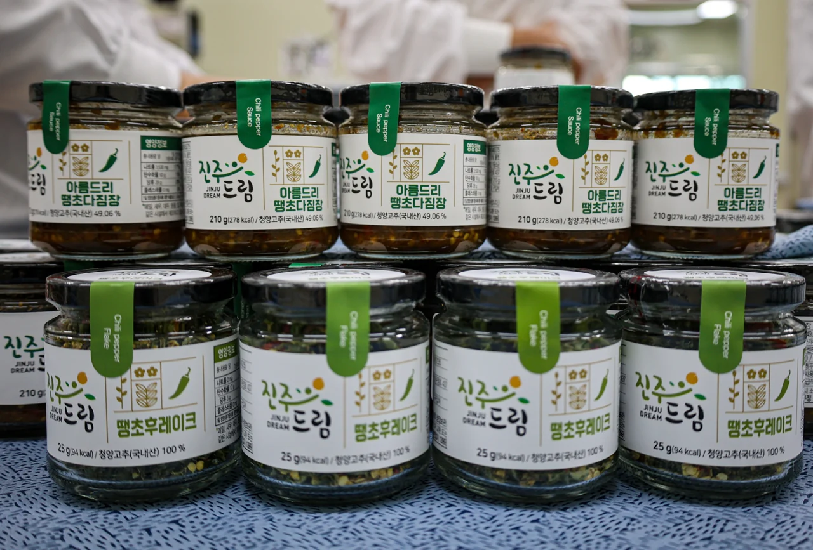

김제 농산물 가공교육｜11월 30일 마감, 원가표를 준비해 가세요

진주 농산물 가공상품 참고 사진. 김제 교육 실습제품이 아닙니다.
김제 농산물 가공 역량 강화 교육은 11월 30일 오후 5시까지 10명을 모집합니다. 가공센터 이용 대상자와 관내 가공 창업·예비창업 농업인이라면, 내 제품의 재료비와 생산 수율을 적어 수업 질문을 준비해 보세요.
교육은 12월 세 차례, 총 9시간입니다
첨부 계획의 일정은 12월 1일 14~17시 식품위생·사고 예방, 12월 9일 13:30~16:30 식품원가 산출·관리, 12월 10일 13:30~16:30 침출차 실습입니다. 이론은 농업인교육문화지원센터, 실습은 농산물가공기술활용센터로 안내됩니다. 일정은 변경될 수 있으니 확정 안내를 확인하세요.
마감 시각은 일반 방문시간보다 우선합니다
접수는 이메일 또는 방문이며 신청서와 농지원부 또는 농업경영체등록증 등을 제출합니다. 이메일 발송 후 063-540-2973으로 도착을 확인하세요. 일반 방문 접수 안내가 18시까지여도 이번 최종 마감은 17시입니다. 첨부의 교육생 확정일은 10월 30일로 기재돼 모집보다 앞서는 오기가 있으므로 실제 통보일은 담당자에게 확인해야 합니다.
| 원가 기록 | 예시 | 내 제품 |
|---|---|---|
| 총 생산량 | 100개 | ___개 |
| 판매 가능한 양 | 90개 | ___개 |
| 배분 비용 | 180,000원 | ___원 |
| 단위원가 | 180,000÷90=2,000원 | ___원 |
| 추가 검토 | 판매·배송·고정비·인건비 | 누락 ___ |
원가표에는 팔 수 있는 수량을 분모로 씁니다
예를 들어 한 번 생산한 100개 중 판매 가능한 제품이 90개이고 재료·포장·에너지 등 배분 비용이 18만원이라면 개당 2천원입니다. 100개로 나누면 1,800원으로 낮게 보입니다. 이 예시는 수업 준비용 계산입니다. 판매 수수료, 배송, 검사·폐기, 인건비와 고정비까지 반영해야 판매가를 판단할 수 있습니다.
실습을 마쳤다고 즉시 판매할 수 있는 것은 아닙니다
식품 영업신고, 표시사항, 보관·배송과 검사 등 제품·판매방식별 절차는 별도 확인이 필요합니다. 이번 교육의 수료 기준은 첨부에서 전 시간 출석으로 안내하므로 세 날짜 모두 가능한지 확인하세요. 수업에는 현재 레시피, 원재료 구입단가, 한 번 생산량, 불량·손실 기록을 가져가면 도움이 됩니다.
작업 전 점검표
- 11월 30일 17시 전 접수·도착을 확인한다
- 12월 1·9·10일 출석 시간을 확보했다
- 판매 가능한 수량 기준 원가표를 만들었다
교육에서 얻을 답은 “얼마에 팔까” 이전에 “한 번 만들 때 실제로 얼마가 드나”입니다.